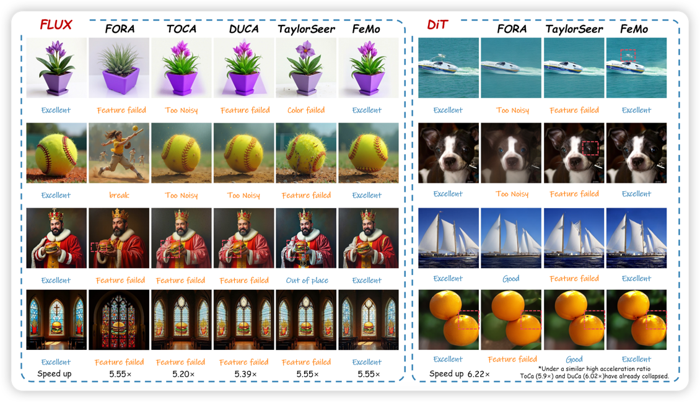
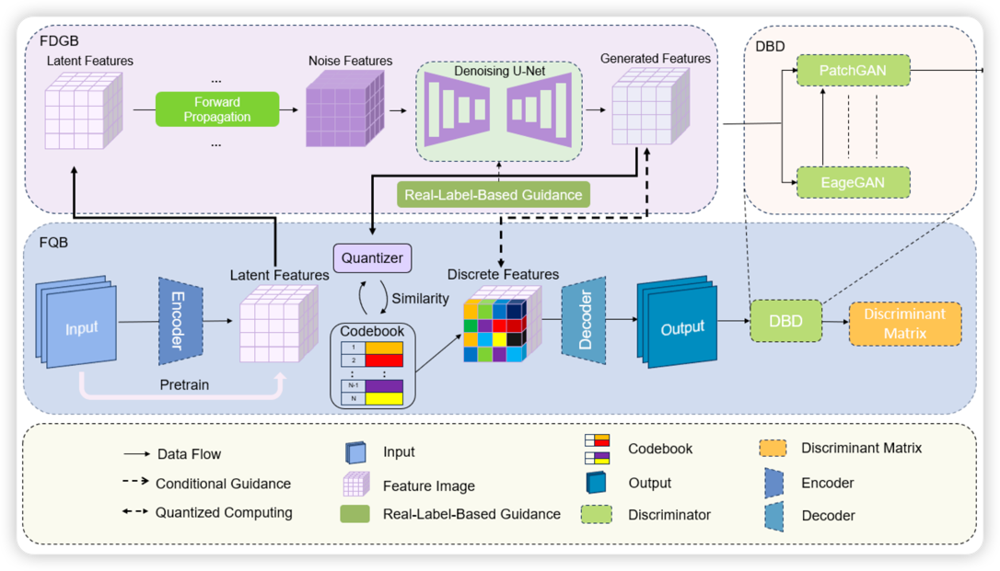
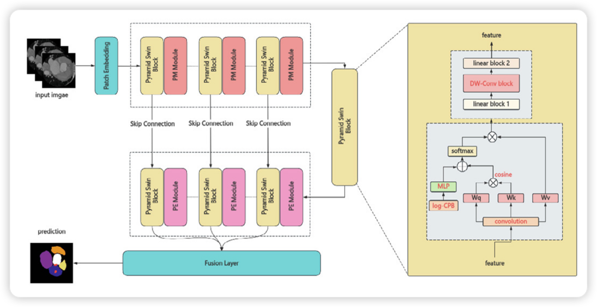

-
Present
TO BE CONTINUED
-
Dec 2024
Joined SJTU EPIC-Lab Internship
-
Sep 2022
Admitted to Shandong University

本人目前是山东大学2022级本科生,
2024
2023
2022
EPIC Laboratory, Shanghai Jiao Tong University
Research Area: Efficient AIGC Dec 2024 – Present
Supervisor: Prof. Linfeng Zhang [Page]
Actively involved in research on Efficient AIGC (Artificial Intelligence Generated Content), focusing on enhancing the performance and efficiency of generative models in image and video tasks. Designed and implemented innovative cache-based methods to accelerate the inference process of Diffusion Transformers (DiT), significantly reducing computational costs. Analyzed and optimized redundant computation paths in Transformer structures within diffusion models, improving generation speed and quality through pruning and feature reuse strategies.
Shandong Key Laboratory of Intelligent Electronic Packaging Testing and Application
Research Area: Medical Image Segmentation Mar 2023 – Present
Supervisor: Prof. Fei Yang [Page]
Participated in the development of deep learning models for medical image segmentation across multiple clinical imaging modalities, including CT, MRI, and ultrasound. Designed and optimized models based on U-Net, nnU-Net, and Transformer architectures, significantly improving robustness and generalization in real-world medical scenarios. Achieved outstanding performance on benchmark datasets such as ACDC (cardiac MRI) and Synapse (abdominal CT), surpassing mainstream baseline methods in key evaluation metrics such as Dice coefficient and Hausdorff distance.
* indicates the corresponding author
-
SpeCa: Accelerating Diffusion Transformers with Speculative Feature Caching
 Jiacheng Liu, Chang Zou, Yuanhuiyi Lyu, Fei Ren, Shaobo Wang, Kaixin Li, Linfeng Zhang*View Project Page
Jiacheng Liu, Chang Zou, Yuanhuiyi Lyu, Fei Ren, Shaobo Wang, Kaixin Li, Linfeng Zhang*View Project Page -
Accelerate Diffusion Transformers with Feature MomentumJiaxin Fang, Chang Zou, Jiacheng Liu, Yuanhuiyi Lyu, Xuming Hu, Linfeng Zhang*View
-
From Reusing to Forecasting: Accelerating Diffusion Models with TaylorSeers
 Jiacheng Liu, Chang Zou, Yuanhuiyi Lyu, Junjie Chen, Linfeng Zhang*Arxiv Project Page Github ZhiHu
Jiacheng Liu, Chang Zou, Yuanhuiyi Lyu, Junjie Chen, Linfeng Zhang*Arxiv Project Page Github ZhiHu -
PCMamba: Parallel Convolution-Mamba Network for Medical Image Segmentation
 Jiacheng Liu, Liquan Dong, Bo Chen, Jiahui Shi, Weigang Lu, Shugang Zhang, Fei Yang*, Dong Li, Lei ZhangView
Jiacheng Liu, Liquan Dong, Bo Chen, Jiahui Shi, Weigang Lu, Shugang Zhang, Fei Yang*, Dong Li, Lei ZhangView -
FQCDM: Feature Quantization-Based Cardiac Image Diffusion Synthesis ModelJiahui Shi, Bo Chen, Jiacheng Liu, Weigang Lu, Shugang Zhang, Weimin Ma, Fei Yang*, Dong LiView
-
PSVT: Pyramid Shifted Window based Vision Transformer for cardiac image segmentationXingyu Zhang, Jiacheng Liu, Xiaoli Xian, Bo Chen, Dong Li, Fei Yang*, Lei ZhangScienceDirect Github